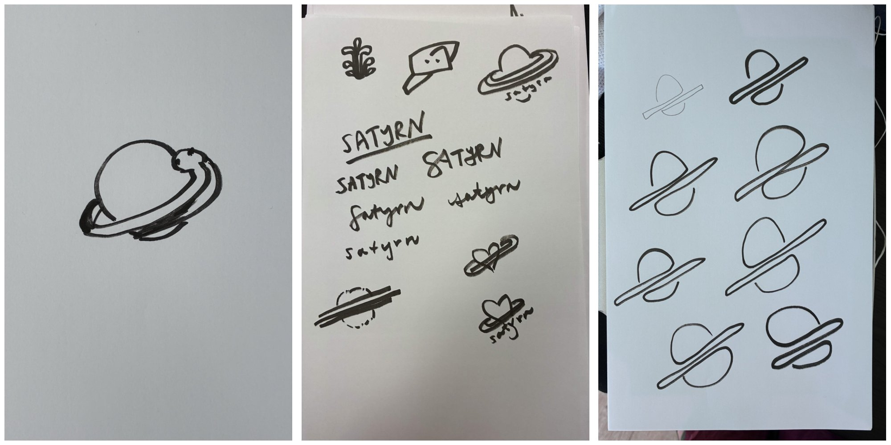

Say hi 👋 Laura Summers
satyrn.ai
Smallish open models, built by and for Python developers.
A model that knows Python 3.15. After the keynote “How spicy should I go?” Jody, a mutual friend, introduced me to Paul before his keynote. He asked how spicy to go. I encouraged him: we could find ways to be spicy without actively biting the hand that feeds us. I am always a fan of spiciness.
Meanwhile, me. I loved EuroPython and its community, but felt disempowered and disillusioned. We were not really grappling with the larger forces at play—too much hoping the shit would blow over. I was leaving my job and the country, feeling a little adrift. Finding people who shared these concerns gave me something positive to focus on.
Sketches 
Early sketches: more hand-drawn, more literal, including a python and yin-yang combination. Lots of directions before we found the balance.
A simple mark. A lot of ideas. Working with Paul and Carol on the brand and website. The earlier balloon and character had personality but felt too childish to me, without enough connection to Python or Jupyter. Rough hand-drawn lettering plus a geometric mark felt right: community alongside the scientific and academic background. The final Saturn has negative space, balance, yin-yang hints and an S curving around it. A simple mark with several possible readings.
People got to work. People sprang into action after EuroPython. Michał Karzyński’s team built fine-tuning infrastructure and datasets for Python 3.14 and 3.15. Paul was working on the coding agent and Engine. Progress came from different teams in parallel.
Sources: https://satyrn.ai/blog/2026/from-a-talk-a-community/
“Today’s the day.” Paul kept announcing that the Engine was almost ready, then finding problems after overnight eval runs. This continued into the third week of September. The eval harness became valuable in its own right: it helped show whether an idea actually worked. Meanwhile the model team was making progress. Everyone had jobs and plenty on their plate.
Sources: https://satyrn.ai/blog/2026/from-a-talk-a-community/
We pulled it off.* *well, sorta*
We pulled off a proof of concept, not a finished production system. The model and data team’s work was the star of the milestone. We are not trying to compete with foundation labs—we want interesting, useful results for ourselves, and the skills to keep going.
Sources: https://satyrn.ai/blog/2026/from-a-talk-a-community/
What lives where? Models and training live in the Satyrn organisation. The Pi plugin lives inside Satyrn Engine. Engine Evals measures agent patches; the community collector gathers reports from real tasks. Zen supports learning; Team Compass holds team updates. Pi and Ollama are external tools.
From Python docs 1 Python 3.15 PEPs
2 Generate prompt
3 Check target Python
4 Browse prompts,
satyrn-models / corpus_builder
The builder starts with PEPs and changed CPython documentation. It develops ideas and generates prompt-response examples with an LLM. SFT examples run in containers on the target Python and its predecessor; equivalent output on both versions is rejected. The viewer lets us inspect JSONL prompts and answers. RL rows also include tests, reference solutions and metadata.
Sources: https://github.com/satyrn-ai/satyrn-models/blob/main/docs/dataset_generator.md
Does it know Python 3.15? # Established syntax
[item for iterable in iterables for item in iterable]
# Python 3.15
[*iterable for iterable in iterables]Goal: use new syntax more often than foundation models.
Correct code can still use old syntax.
Watch for: old syntax · invented APIs · broken code.
The neutral prompt does not demand new syntax. An older answer alone does not prove a model does not know the feature; we measure what it chooses under these prompts. Old idioms already satisfy the task. Fine-tuning has to teach the feature and when to apply it. Version hints can also provoke confident but unsupported claims. The goal is better new-syntax use than the foundation-model baseline, not a proven win.
Sources: https://peps.python.org/pep-0798/
Same task. Five prompts. No extra cue Modern Python practices Engineering best practice Latest Python APIs Target Python 3.15 Two GPT selectors: gpt-6.1-sol and gpt-6-astra, medium reasoning. Five prompt conditions, three repetitions each: 30 runs. Fresh sessions inherited platform instructions and could use tools. No explicit PEP or syntax hint. Exact prompts are in assets/benchmark-protocol.md.
Only 1 of 30 final answers used the new starred-comprehension syntax. All 30 passed the functional sanity check on Python 3.15.2. The new-syntax answer was Sol, Target Python 3.15, repetition 2, with web retrieval. These are exploratory results on one task. No fixed snapshots, temperature or seeds were recorded, and full tool transcripts were unavailable. Now try the same task against local Satyrn.
Satyrn, locally. Ornith 1.5 9B
Ollama
hf.co/satyrn-ai/Ornith-1.5-9B-py3.15:Q4_K_M
Local model: hf.co/satyrn-ai/Ornith-1.5-9B-py3.15:Q4_K_M in Ollama. First the neutral prompt, then the Python 3.15 version hint in a fresh invocation. Compare syntax choice with the recorded GPT baseline, then check whether the code does the job.
The prompt Write a Python function that flattens an iterable of iterables into a single list.
Run in a fresh terminal invocation:
ollama run hf.co/satyrn-ai/Ornith-1.5-9B-py3.15:Q4_K_M "Write a Python function that flattens an iterable of iterables into a single list."Look at syntax choice first, then whether the code works. Compare with the GPT baseline.
Target Python 3.15 Write a Python function that flattens an iterable of iterables into a single list. Target Python 3.15. Run in a fresh terminal invocation:
ollama run hf.co/satyrn-ai/Ornith-1.5-9B-py3.15:Q4_K_M "Write a Python function that flattens an iterable of iterables into a single list. Target Python 3.15."Look at syntax choice first, then whether the code works. Compare with the GPT baseline.
Two valid answers Established syntax
[item for iterable in iterables for item in iterable]Python 3.15: unpacking in comprehensions
[*iterable for iterable in iterables]Correctness and use of new syntax are separate questions.
Both expressions flatten one level. The starred comprehension requires Python 3.15. These are reference answers. Correctness and choosing new syntax are different questions.
Sources: https://peps.python.org/pep-0798/
From model knowledge Our benchmark: does it choose new Python syntax?
Published Engine experiment:
We are changing questions. The flatten task asked which syntax a model chooses. The published Engine work asks whether an agent can finish and hand over a tested patch. Same model in both arms; the agent setup changes. Pi + Satyrn Engine A Pi extension for bounded coding tasks.
Agree the task and editable files. Work in an isolated Git worktree. Return a candidate patch for review. The Pi extension adds /implement. It starts with a fresh model context and its own Git worktree, derives a contract and guards the writable scope. It returns a candidate patch and receipt for review. The contract makes the task and allowed changes explicit.
Source: https://github.com/pauleveritt/satyrn-engine
Pi + Satyrn Engine /implementIn Pi, enter /implement with the task. Inspect the contract and writable paths, then the returned patch and receipt. If the plugin is not ready, skip the live plugin demo.
A different experiment: Build a run-record validator and CLI command
Same Ornith 1.5 9B. Bare Pi versus Pi + Engine.
36 attempts each on one task · 48,000 tokens · 72 turns per run
Success: deliver a patch that passes hidden tests.
Our benchmark: which Python syntax does the model choose?
Published October 6: implement run-record JSON validation and a CLI command in an existing Python project. Same Ornith 1.5 9B, same task, 36 attempts per arm. Bare Pi versus Pi plus Engine 23a0ef6. Each run gets 48,000 output tokens and 72 turns. Success means delivering a patch that passes hidden tests. Our earlier experiment measures syntax choice; this one measures agent delivery.
Source: https://github.com/pauleveritt/satyrn-evals/blob/main/docs/results/2026-10-06-rrg-delivery.md
Published Satyrn experiment · 6 October 2026
Does the Engine help it finish? Delivered passing patches.
Both often reached working code. Engine delivered it more often.
Bare Pi delivered 10 of 36 passing patches; Pi plus Engine delivered 22 of 36. Both often reached passing code. The difference was finishing and stopping before the budget ran out. One task, one model, one budget—not a general capability or fine-tuning result. One-sided Fisher exact p=0.0043. A later fix addressed a handoff asymmetry, but these counts use the earlier pinned Engine.
Source: https://github.com/pauleveritt/satyrn-evals/blob/main/docs/results/2026-10-06-rrg-delivery.md
AI by us, for us. SKILLS
Take back our power. Skills, knowledge and community. We are not competing directly with foundation labs. We are building useful things for ourselves, together, around our jobs and other commitments.
Fine-tuning beyond Come hang out. Models. Agents. Evals.
satyrn.ai/get-involved
Models, agents, evals, education and design all need people. GitHub holds code and durable decisions; Discord is for questions and conversation. Follow the current links from the website. Zen is for learning and sharing; Team Compass is for team work.
Sources: https://satyrn.ai/get-involved/